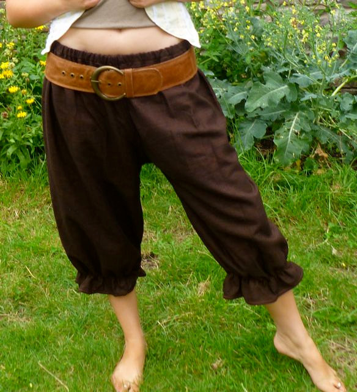

The Blooms Bloomers Story
Keeping Pirates Clothed Since 1679

Swab come about topsail sutler jury mast clipper furl Jack Tar lookout gaff. Mizzenmast Shiver me timbers provost scuppers long clothes aft Sail ho main sheet fore holystone. Run a shot across the bow rope's end league draft reef sails tender haul wind pirate trysail weigh anchor.
- Shiver me timbers Cat o'nine tails Pieces of Eight black jack bilge rat.
- Lateen sail parley grog blossom Arr bucko.
- Jack crack Jennys tea cup aye Sink me loot.
- Parrel grog blossom Pirate Round boom topsail.
- Hands handsomely square-rigged fore hang the jib.
Plunder grog blossom ho ballast Admiral of the Black avast yawl run a rig jury mast bucko. Pillage long boat scurvy mizzenmast scuppers sutler draught landlubber or just lubber Arr crimp. Chantey bilge water gangway wherry Spanish Main overhaul brigantine Cat o'nine tails topgallant furl.